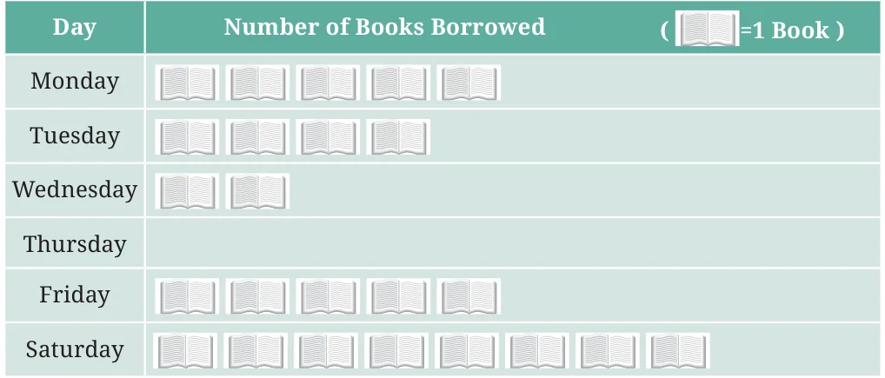
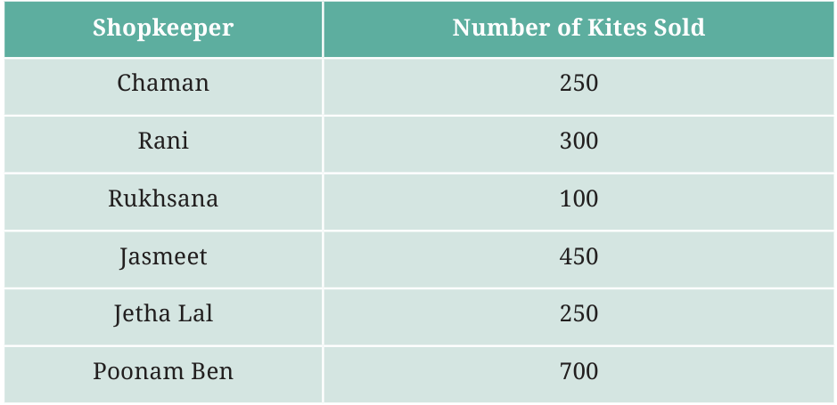

<!DOCTYPE html>
<html lang="en">
<head>
<meta charset="UTF-8">
<meta name="viewport" content="width=device-width,initial-scale=1">
<title>Figure it Out — Data Handling and Presentation</title>
<meta name="description" content="Class 6 Mathematics · Data Handling and Presentation · Figure it Out">
<link rel="icon" href="data:image/svg+xml,<svg xmlns='http://www.w3.org/2000/svg' viewBox='0 0 100 100'><text y='.9em' font-size='90'>📘</text></svg>">
<link rel="stylesheet" href="../../../assets/book.css">
<link rel="stylesheet" href="https://cdn.jsdelivr.net/npm/katex@0.16.11/dist/katex.min.css" crossorigin="anonymous">
</head>
<body>
<header class="topbar">
<div class="topbar-in">
  <div class="crumb">
    <span class="c1"><a href="../../../index.html">Library</a> · <a href="../../index.html">Class 6 Mathematics</a></span>
    <span class="c2">Data Handling and Presentation · Figure it Out</span>
  </div>
  <a class="tb-btn" data-nav="prev" href="../../04-data-handling-and-presentation/06-drawing-a-pictograph/index.html" title="Drawing a Pictograph">←</a>
  <details class="drawer"><summary class="tb-btn" title="Sections in this chapter">☰</summary>
<div class="drawer-panel"><div class="dh">Data Handling and Presentation</div><a href="../01-chapter-opener/index.html">Chapter opener; 4.1 Collecting and Organising Data</a><a href="../02-figure-it-out/index.html">Figure it Out</a><a href="../03-figure-it-out/index.html">Figure it Out</a><a href="../04-figure-it-out/index.html">Figure it Out</a><a href="../05-pictographs-4.2/index.html">4.2 Pictographs</a><a href="../06-drawing-a-pictograph/index.html">Drawing a Pictograph</a><a href="../07-figure-it-out/index.html" aria-current="page">Figure it Out</a><a href="../08-bar-graphs-4.3/index.html">4.3 Bar Graphs</a><a href="../09-figure-it-out/index.html">Figure it Out</a><a href="../10-drawing-a-bar-graph-4.4/index.html">4.4 Drawing a Bar Graph</a><a href="../11-figure-it-out/index.html">Figure it Out</a><a href="../12-artistic-and-aesthetic-considerations-4.5/index.html">4.5 Artistic and Aesthetic Considerations</a><a href="../13-figure-it-out/index.html">Figure it Out</a><a href="../14-infographics/index.html">Infographics</a><a href="../15-summary/index.html">Summary</a><a href="../16-solutions/index.html">CHAPTER 4 — SOLUTIONS</a></div></details>
  <a class="tb-btn" data-nav="next" href="../../04-data-handling-and-presentation/08-bar-graphs-4.3/index.html" title="4.3 Bar Graphs">→</a>
  <button class="tb-btn" data-theme-toggle title="Toggle light / dark" aria-label="Toggle light or dark theme">◐</button>
</div>
<div class="progress"><span style="width:35.6%"></span></div>
</header>
<main class="wrap">
<div class="sec-head">
  <p class="eyebrow"><a href="../index.html">Chapter 4 · Data Handling and Presentation</a></p>
  <h1>Figure it Out</h1>
  <p class="sec-meta">Textbook pages 10–12 · 5 figures</p>
</div>
<article class="prose">
<p>Figure it Out</p>
<ul class="qlist">
<li><span class="mk">1.</span><span class="lt">The following pictograph shows the number of books borrowed</span></li>
</ul>
<p>by students, in a week, from the library of Middle School, Ginnori:</p>
<figure class="fig table-fig wide"></figure>
<ul class="qlist">
<li><span class="mk">a.</span><span class="lt">On which day were the minimum number of books borrowed?</span></li>
<li><span class="mk">b.</span><span class="lt">What was the total number of books borrowed during the</span></li>
</ul>
<p>week?</p>
<ul class="qlist">
<li><span class="mk">c.</span><span class="lt">On which day were the maximum number of books borrowed?</span></li>
</ul>
<p>What may be the possible reason?</p>
<ul class="qlist">
<li><span class="mk">2.</span><span class="lt">Magan Bhai sells kites at Jamnagar. Six shopkeepers from nearby</span></li>
</ul>
<p>villages come to purchase kites from him. The number of kites he sold to these six shopkeepers are given below -</p>
<figure class="fig table-fig wide"></figure>
<p>Prepare a pictograph using the symbol to represent 100 kites. Answer the following questions:</p>
<ul class="qlist">
<li><span class="mk">a.</span><span class="lt">How many symbols represent the kites that Rani purchased?</span></li>
<li><span class="mk">b.</span><span class="lt">Who purchased the maximum number of kites?</span></li>
<li><span class="mk">c.</span><span class="lt">Who purchased more kites, Jasmeet or Chaman?</span></li>
<li><span class="mk">d.</span><span class="lt">Rukhsana says Poonam Ben purchased more than double the</span></li>
</ul>
<p>number of kites that Rani purchased. Is she correct? Why?</p>
</article>
<nav class="pager"><a class="" data-nav="prev" href="../../04-data-handling-and-presentation/06-drawing-a-pictograph/index.html"><span class="dir">← Previous</span><span class="t">Drawing a Pictograph</span><span class="ch">Data Handling and Presentation</span></a><a class="nx" data-nav="next" href="../../04-data-handling-and-presentation/08-bar-graphs-4.3/index.html"><span class="dir">Next →</span><span class="t">4.3 Bar Graphs</span><span class="ch">Data Handling and Presentation</span></a></nav>
</main><footer class="site">Generated from the source textbook PDFs · text, figures and exercises belong to their respective publishers.</footer><script defer src="https://cdn.jsdelivr.net/npm/katex@0.16.11/dist/katex.min.js" crossorigin="anonymous"></script>
<script defer src="https://cdn.jsdelivr.net/npm/katex@0.16.11/dist/contrib/auto-render.min.js" crossorigin="anonymous"
  onload="renderMathInElement(document.body,{delimiters:[
    {left:'\\(',right:'\\)',display:false},
    {left:'$$',right:'$$',display:true},
    {left:'\\[',right:'\\]',display:true}],throwOnError:false,ignoredTags:['script','noscript','style','textarea','pre','code']})"></script>
<script src="../../../assets/book.js"></script>
</body>
</html>
